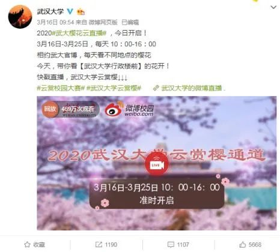

被打断的未来：疫情那么严峻，我还能找到工作吗？
原文链接 备份链接 摘要：本文为“2020，我们的生活在继续”征文大赛的投稿作品。2020年，本来是计划中作为人生转型的一年。疫情一来，一切都变成了问号。 随着不能出门的日子越来越长，我的失业焦虑也愈发严重。 时至今日，已经是我在家中无 …

“三月赏樱唯有武大。”
武大的樱花一向是武汉初春的胜景，一般始于3月中旬，历时2到3周。每到那时，数万名游客蜂拥而至，然而由于今年新冠肺炎疫情的暴发，无论是本地的居民，还是外地的游客，都无缘于此。
基于这样的情况，3月12日，武汉大学发布《武汉大学关于加强2020年樱花开放期间实行校园封闭管理的通告》，宣布为满足师生员工、校友以及社会公众赏樱需求，武汉大学樱花盛花期免费开放10天左右网络“云赏樱”通道。根据新华社报道，中国移动咪咕全程提供5G＋VR直播技术支持，是全球首次5G+VR“云赏樱”。

截图来源：武汉大学官微
3月16日上午10点，武大云赏樱刚一开播，1分钟的时间里，淘宝直播间里瞬间就涌入30万人，直接超过去年整个赏樱季的游客人数。目前，微博上“武汉大学云赏樱”这一话题的阅读量已经超过6600万次。
5G，很明显是2020年“云赏樱”的关键词，而今年又被誉为是5G大发展的一年。2019年12月，由中国信通院等机构联合发布的《中国5G经济报告2020》显示，2020年，5G商用将在中国拉动投资9000亿元，创造54万人就业。
那么，5G云赏樱到底有什么特别？近万亿元投资的5G技术今年又能给国人带来什么呢？

5G和“云”的爆发
实际上，“云赏樱”并不是一个新的活动了。
随着直播和短视频的技术不断兴起，在2013年前后，包括“云赏樱”在内的多样化云旅游就已经悄然兴起，但只不过那时候还不是在利用5G技术，所以普及程度还不是很高。
某资本方的投资经理陈吉（化名）对笔者表示，这次疫情的暴发，其实在一定程度上刺激了云经济的发展，因为对于很多旅游景点本身来说，选择云旅游的方式就是选择了一种新的“求生”方式，而这段时间，由于大家都不便出门，反而是一个好机会来发展这种模式，否则，等待着这些旅游景点的就是惨重的损失。
“5G技术，可以看作是云旅游发展的催化剂。”陈吉这样表述。
此前，3月5日，携程集团董事局主席梁建章在“旅游复兴V计划”线上发布会上公开表示：“旅行行业为全球贡献了超过10%的GDP，遗憾的是，在这次疫情中，旅行行业也是受损最严重的行业之一。”
此前，根据同程旅游发布的《2020春节黄金周居民旅游消费趋势报告》预测，2020年春节黄金周出游人数预计在4.5亿人次左右。相比2019年春节黄金周4.15亿人次出游贡献5139亿元的战绩，2020年春节黄金周消费总额将大概率突破5200亿元。
很明显，这份报告是发布于疫情暴发之前，如果这样来考虑，在疫情持续的近两个月时间里，旅游行业的损失是一个庞大的数字。
“因为这样的特殊时期，旅游行业的公司转向云旅游是可以理解的，而由于5G技术对于云旅游的赋能，其实一定程度上解决了不少传统单纯直播旅游的痛点，提升了观众体验。”易唯思商务咨询的咨询顾问周启冉这样表示。
大唐移动5G产品线副总裁李文向笔者介绍，视频直播具有实时现况性质，互动性要求很高，而且视频的流畅性极为重要。而传统的直播很难保证视频流的传输成功率，容易出现丢帧、花屏、卡顿等问题。

全球顶级5G+8K转播车（图片来源：视觉中国）
“与传统直播相比，5G+VR直播的形式具备全景、3D以及交互3个特点。5G带来的超低延迟可以使设备提升全景视频的分辨率和码率，从而使VR视频达到更好的观看体验。”李文这样表示。
李文认为，5G直播将成为未来直播报道的主要方式，应用领域将会不仅仅局限于云旅游，还可以应用到演唱会、体育赛事、竞技等各种现场，同时，能为用户带来更真实、更具沉浸感的感官体验。
文旅部产业发展司司长高政在18日的发布会上表示，随着抗击疫情形势的不断好转，广大群众的文旅消费热情也在不断地恢复和高涨。下一步将围绕“有序开放、狠抓线上、帮扶企业”12个字推动文旅消费。其中，“狠抓线上”就是要加快发展数字文旅产业，把握产业发展新趋势、新需求，推动文化旅游与数字经济深度融合。
这也就意味着，即使疫情过去了，随着5G等技术对旅游行业的赋能，云旅游在未来仍有一席之地。
2020年的5G能带来什么？
除了可以“云赏樱”，预计今年总投资近万亿元的5G技术还能带来什么？
李文向笔者表示，今年是我国5G建设发展的关键之年，虽然疫情在一定程度上给5G建设带来了影响，但随着通信行业复产复工脚步加快，全年来看，我国整体5G建设将不会放缓。
据李文介绍，从总体上来看，国内三大运营商都立下“2020年5G建设目标不减”的军令状，预计55万个基站将在年底建成。此外，三大运营商加大5G网络建设的同时，还正在布局5G独立组网，而相应的网络也会在今年底开始商用，对此中国移动已经计划四季度实现5G独立组网商用，建成全球规模最大的5G网络。

MWC19上海展，5G网络 5G+（图片来源：视觉中国）
至于5G技术的具体落地，除了视频直播，李文重点提到了智慧医疗、车联网、智慧教育和智慧工厂这4个方面。以智慧医疗为例，5G可实现医院内外大量医疗设备互联、医疗大数据快速处理、医疗信息实时共享，极大地提高医疗工作效率，助力医疗资源脱离地域限制。
例如2019年6月，大唐移动同湖北移动合作，将5G技术应用于远程医疗服务，支撑十堰市太和医院成功实现医联体内5G远程协同手术，远程指导神农架林区人民医院医生顺利完成腹腔镜下行胆囊切除手术操作、远程协同实施74岁老人膝关节手术等。
但周启冉则提出一个担忧，他认为，如果说到5G技术真正要“落地”，2020年或许很难实现。“因为普通的5G网络不行，延迟和网速都达不到预期，体验效果会很差，技术上要更进一步，大概还要1～3年去演进。”
李文还补充道，5G从提出需求到标准制定，再到相关设备形态成熟可商用化、实体应用逐渐落地，需要长达10年左右的发展时间。而谁能更快抓住新一代技术为社会及产业赋能，谁就能占有更大优势。
“同样地，6G网络也需要相似甚至更长的时间发展。而从现在开始研究6G，其实是在投资未来。”
（编辑：黄玉璐 校对：颜京宁）


推荐阅读

点击大图 |为什么美国要“直升机撒钱”？

点击大图 | 钟南山：对输入病例要高度警惕，疫情传播第一波传染性很强！****

原文链接 备份链接 摘要：本文为“2020，我们的生活在继续”征文大赛的投稿作品。2020年，本来是计划中作为人生转型的一年。疫情一来，一切都变成了问号。 随着不能出门的日子越来越长，我的失业焦虑也愈发严重。 时至今日，已经是我在家中无 …
原文链接 备份链接 图片来源：Unsplash 记者：郑洁瑶 编辑：文姝琪 “ 看视频的人变多了，拍视频的人却没有变得更好。 ” 小九犹豫再三，决定还是向粉丝解释一下现在的情况。他穿着睡衣，坐在电脑前，打开了相机。 “各位，由于疫情的原 …
原文链接 备份链接 之前服务于方舱医院的GE医疗“诺亚一号” 一体式CT检查室，如今就在越来越多的医院落地。方舱医院的模式，也在湖北以外的更多省份开始走向常态化，为预防型公共卫生防疫体系的建设添砖加瓦。作为团队里年龄最小的光头护士，国文霞 …
原文链接 备份链接 长远来看，旅游行业仍是朝阳产业 2月28日，曾获阿里投资、被称为“中国出境旅游O2O第一股”的百程旅行网启动清算准备。 这家依靠签证业务导流的百程旅行在过去几年持续经营困难，意料之外的疫情成为压垮资金链的最后一根稻 …
原文链接 备份链接 实习记者 | 文思敏 编辑 | 倪 妮 眼下，居住在英国苏格兰首府爱丁堡的Naomi感到很无助。 Naomi来自中国台湾，在英国已经居住了近七年，丈夫James则是苏格兰本地人。从3月7日起，James开始出现咳嗽、 …